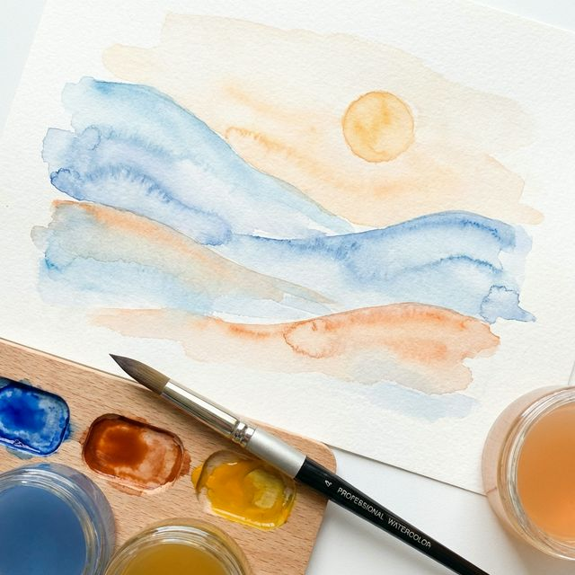

Acuarelas Etéreas
Descubre la magia de la transparencia. En este curso aprenderás a dominar el flujo del agua para crear texturas luminosas y paisajes atmosféricos.
- ✨ 12 Módulos en vídeo HD
- ✨ Guías de materiales descargables
- ✨ Acceso para siempre
Contenido del Curso
Lección 1: Guía Completa para Principiantes (2024)
Comienza con el pie derecho con esta guía exhaustiva de Jenna Rainey. Aprenderás desde cómo elegir tus pinceles hasta las pinceladas básicas que definen la acuarela moderna.
Lección 2: Ejercicios Esenciales de Control (2025)
Domina el control del agua con Erika Lancaster. En este video de 2025, aprenderás la técnica de "Té a Mantequilla" para manejar la saturación y crear efectos profesionales desde el primer día.
Lección 3: Técnicas de Gradiente y Fondos
Descubre cómo crear cielos perfectos y fondos difuminados con Emma Jane Lefebvre. Una lección magistral sobre la técnica de húmedo sobre húmedo.